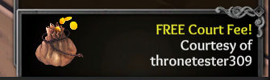

Status
Live!
Desync/Stability Fixes
- If someone leaves at the name selection screen, it’ll no longer desync the party (freeze 1 minute >> then throw you back into the lobby). Apologies this took so long to fix!

- Local gold cache should now be better sync’d with the server (eg, buying items, getting bonus gold, etc).
- Bonus gold now always factors in – not just when you get MVP and other odd cases. This includes MVP voting others (5 gp per), among other bonuses.
- Bonus gp is now properly separated from win/loss gold at the end screen.
- Fixed the lobby memory leak when you’re there for a long time.
Class Fixes
- Scorned Incriminate abil now properly rewards marks as intended.
- If a Sorc gets silenced, and silence expires when they could normally use “Escape Fate” (at pardon/exe selection), they can now properly use it again.
- If a Sorc gets silenced, and silence expires before they can normally use “Escape Fate” in a trial, it will no longer allow it’s use.
- At a trial’s pardon/exe select phase, Noble/Aristo force vote abils will no longer allow its use.
- When Possessor’s Puppet Strings abil forces a player into a player shielded by the Merc, there will be better feedback that you were forced to attack.
- [4.0.1a] Sellsword can now self-target with Stonewall (thx
@Sellsword+@Amelia)
Class Cards / Feedback
- Seeker’s “Can’t Target King” feedback now adjusted to explain that it’s more of a fallback (the feedback is sync’d with feedback - I’ll add some exceptions at a later date).
- Fixed some class cards that target more than 1 player were showing in feedback section instead of (eg, a list of players).
- Wolf Companion’s “Not useable until D3” text moved to memo for consistency and less bloat.
- Added Inquisitor missing Heretic info about Prince+Hunter.
Fluff
- If you’re a guest of a private room, you’ll now receive a toast saying {host name} treated you the court fee (free).
- 
- Status icon text on the left no longer break to new lines when hovering over them.
- Silence icon prettied up a bit.
- Loading screen clipped text fixed that sometimes showed at tips.
- Less generic colors for you win/loss @ end screen.
- Player panel text now looks less pixelated in some resolutions.
- “You are now the private host” popup prettified.
Looking for the last major patch(es)?
–Xblade @ https://discord.gg/tol